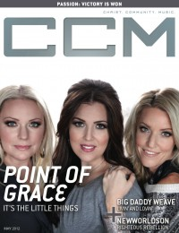

CCM Digital, May 2012
| Cover |
|---|
|  |
 Online Exclusively Online Exclusively |
| Writers in this Issue |
| Argyrakis, Andy Aspinwall, Grace S. Assad, Audrey Conner, Matt Durbin, Emily Greer, Andrew Huguley, Kevin Jackson, Tom Jamison, Joshua Lusk, Caroline Siler, Steve Tasker, Nathan |
Point of Grace
Cover Feature:- "It's the Little Things" by Caroline Lusk
- "The Doves"
- "Livin' and Lovin'" by Matt Conner
- "Righteous Rebellion" by Caroline Lusk
Worship:
- "Passion: Victory Is Won" by Emily DurbinPassion Band (Louie Giglio interviewed)
- "Blessings"
- Rosie Thomas by Andrew Greer
- William McDowell by Andrew Greer
- Hana Kim by Matt Conner
- Demon Hunter by Andy Argyrakis
- "How to Enter In" by Joshua Jamison
- "A World Alive With Song" by Steve Siler
- Deitrick Haddon
- "The Brown Owl Studio"
- "What's New With KJ-52" by Andy Argyrakis
- Lara Landon
Reviews & New Releases:
- Christy Nockels - Into the Glorious by Matt Conner
- Paul Baloche - The Same Love by Andrew Greer
- GatewayNEXT - Look Up by Grace S. Aspinwall
- Steven Curtis Chapman - #1s, Volume 1 by Andy Argyrakis
- Britt Nicole - Gold by Grace S. Aspinwall
- Jon McLaughlin - Promising Promises by Matt Conner
- Demon Hunter - True Defiance by Matt Conner
- Hawk Nelson - The Songs You've Already Heard: Best of Hawk Nelson by Andy Argyrakis
- Haste the Day - Best of the Best by Matt Conner
- Scott Krippayne - Fight For Love by Andy Argyrakis
- ISIDORE - Life Somewhere Else by Andy Argyrakis
- Tim Bowman, Jr. - Beautiful by Andrew Greer
- KJ-52 - Dangerous by Matt Conner
- Israel Houghton - Decade by Andrew Greer
- Le'andria Johnson - The Evolution of Le'Andria Johnson by Andrew Greer
- Johnny Cash - Bootleg Vol IV: The Soul of Truth by Andrew Greer
- The Cranberries - Roses by Andy Argyrakis
- Wilson Phillips - Dedicated by Andy Argyrakis
- "Christ Community Church, St. Charles, IL" by Andy Argyrakis
- "And the Award Goes to..." by Kevin Huguley
- "Eternity" by Nathan Tasker
- "Reaching the Unreachable" by Caroline Lusk
- "Prince and Creating Spontaneity" by Tom Jackson
Relevant Links
For more information about CCM Digital visit .This issue is available exclusively online.
© 2011 CMnexus. Last updated September 2019. Contact: editor -AT- cmnexus -DØT- org About